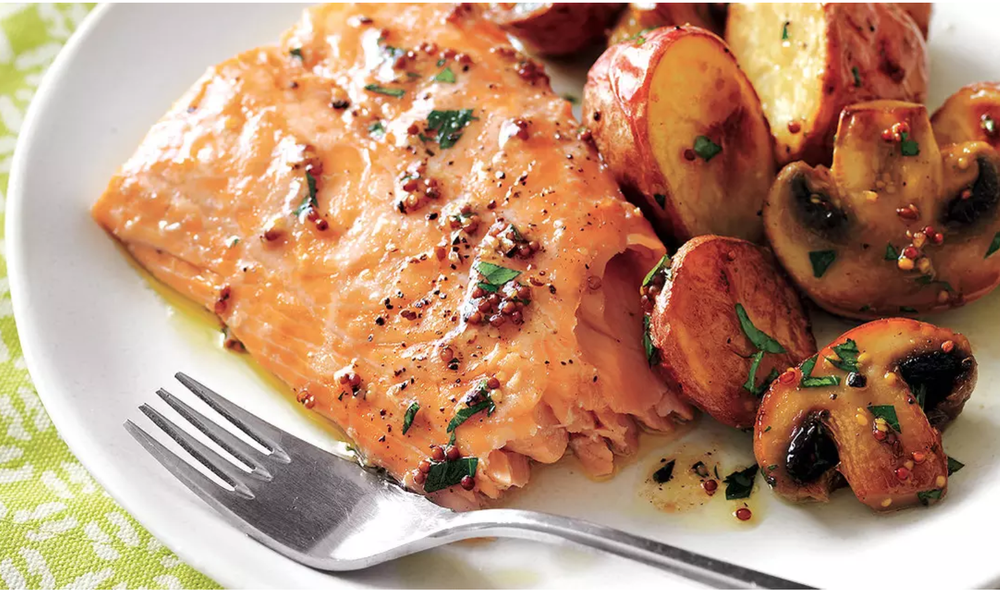
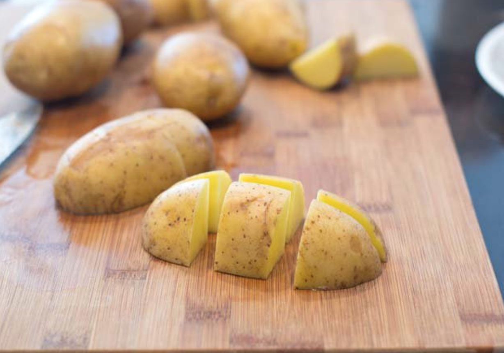
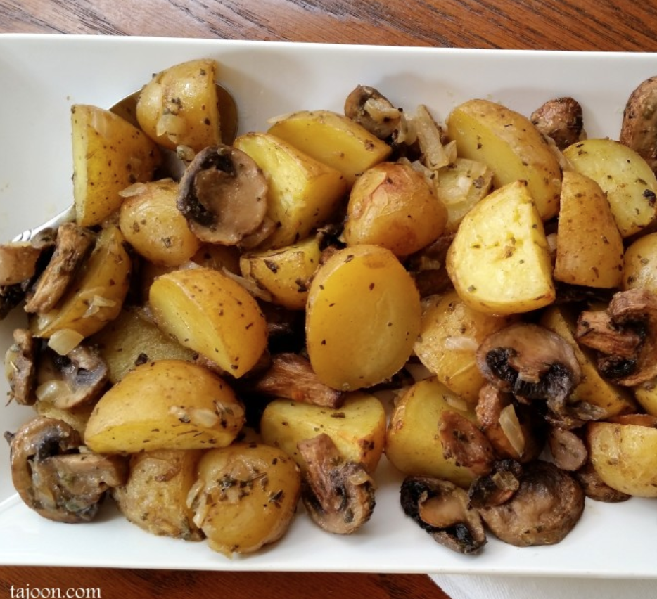
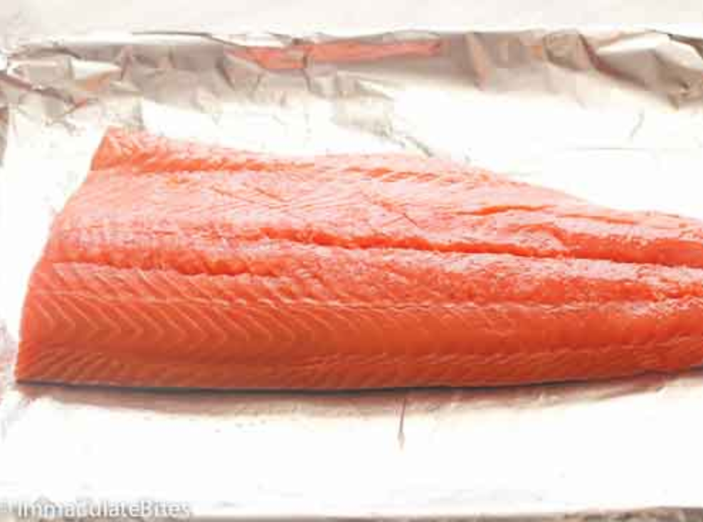

|

Ingredients: Salmon Fillet, Button Mushrooms, Potatoes, Salt and Pepper, Mustard, Honey |
|

Cut potatoes and Mushrooms into large cubes |
|

Heat oven to 400° F. On a rimmed baking sheet, toss the potatoes, mushrooms, 1 tablespoon of the oil, and ½ teaspoon each salt and pepper. |
|

Put salmon in the center of the pan (leave vegetables on the pan) and season with salt and pepper. Bake for around 10-15 minutes. |
|
Sevre in Plate. Mix a tablespoon of mustard and honey and two drops of oil and drizzle onto the bake. |